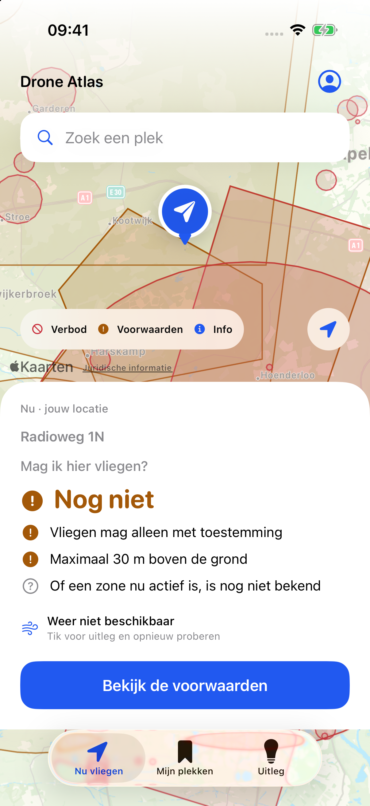
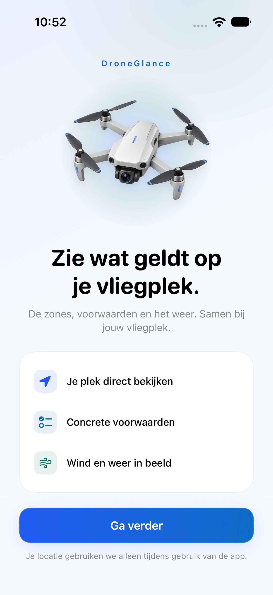
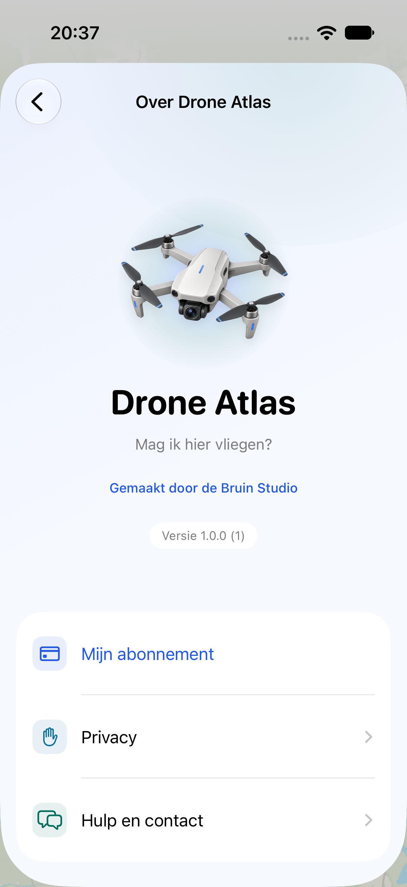

Bronnen opnieuw gecontroleerd
Tijdens gebruik worden aangesloten bronnen automatisch opnieuw gecontroleerd. Een mislukte update of oudere bron blijft herkenbaar.
Voor iPhone · in voorbereiding
Je plek, de kaartvoorwaarden en het weer. Rustig bij elkaar, zodat je ziet welke check nog nodig is.
Van plek naar volgende stap
De vraag is simpel: mag ik hier vliegen? Drone Atlas brengt de beschikbare informatie naar je toe.
Gebruik je huidige locatie of zoek een adres. Ook handig als je vooraf een mooie vliegplek wilt bekijken.
Bekijk de beschikbare zones, hoogtevoorwaarden en aandachtspunten voor jouw drone, met wind en windstoten erbij.
Lees de oorspronkelijke voorwaarden en benodigde vervolgstappen. Ontbrekende of verouderde gegevens blijven zichtbaar.
Een rustige kaart. Een bruikbaar antwoord.
Geen lange lijst voordat je weet waar je aan toe bent. Je ziet de concrete aandachtspunten en opent de uitleg wanneer je die nodig hebt.



Ongewijzigde schermen uit de native app in ontwikkeling: de kaart voor Kootwijk met oorspronkelijke Nederlandse brongebieden, het welkom en de informatie over de app. Vastgelegd op 8 oktober 2026. Het kaartbeeld is een momentopname, geen actuele vliegcheck voor deze plek.
Voor het moment vóór je vlucht
Bewaar een plek die je wilt terugvinden. Bekijk het weer voor nu of een geplande tijd. Lees de bronvoorwaarden zonder eerst door allerlei losse kaarten te bladeren.
Tijdens gebruik worden aangesloten bronnen automatisch opnieuw gecontroleerd. Een mislukte update of oudere bron blijft herkenbaar.
Bronnen en voorwaarden verschillen per land. De app laat zien wat beschikbaar is en welke informatie nog ontbreekt. Volledige, actuele EU-dekking is niet gegarandeerd.
Bekijk beschikbare wind, windstoten en weergegevens. De bron en het tijdstip staan erbij; weergegevens zijn geen garantie dat een vlucht veilig is.
Je plek blijft jouw keuze
Geen apart account, advertenties of ingebouwde tracking. Je droneprofiel en bewaarde plekken blijven op je toestel.
Lees hoe de app gegevens gebruiktVoor je opstijgt
Van een kleur op de kaart naar de stap die nog nodig is.
Bekijk alle veelgestelde vragenRood wijst op een bronbeperking, oranje op voorwaarden of actie en blauw op informatie. De tekst bij je plek geeft de betekenis; de kleur bewijst geen actuele toestemming. Lees de uitleg over kleuren.
Nee. De geladen kaart toont dan geen passende beperking. Tijdelijke en lokale regels of andere checks kunnen nog ontbreken. De app houdt die punten zichtbaar. Wat een lege kaart wel vertelt.
Tijdens gebruik worden aangesloten bronnen opnieuw gecontroleerd. Mislukte updates en oudere gegevens blijven herkenbaar; gesloten apps worden niet voortdurend bijgewerkt. Hoe updates werken.
Je plek bepaalt het land. Deze versie heeft bronkaarten voor Nederland, Duitsland, Denemarken, Finland, Frankrijk en Zweden. Andere EU-zonekaarten zijn nog niet beschikbaar. Tijdelijke en lokale regels kunnen ontbreken. Lees wat beschikbaar betekent.
Bevestig je opstijgplek op de kaart of zoek het juiste adres. Bij onzekerheid rond een zonegrens kan de app om bevestiging vragen. Zo kies je de juiste plek.
Drone Atlas voor iPhone
De app is nog niet beschikbaar in de App Store. De downloadlink en definitieve abonnementsvoorwaarden volgen bij publicatie.